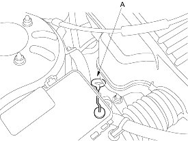
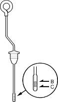
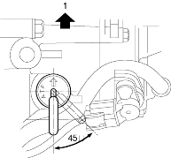

- Warm up the engine to normal operating temperature (the radiator fan comes on).
- Park the vehicle on level ground and turn the engine off.
- Remove the dipstick (yellow loop) (A) from the transmission and wipe it with a clean cloth.

- Insert the dipstick into the transmission.
- Remove the dipstick and check the fluid level. It should be between the upper mark (B) and lower mark (C).

- If the level is below the lower mark, pour the recommended fluid into the dipstick hole to bring it to the upper mark. Always use genuine Honda ATF-Z1 Automatic Transmission Fluid (ATF). Using a non-Honda ATF can affect shift quality.
- Insert the dipstick back into the transmission in the direction shown.

- Front